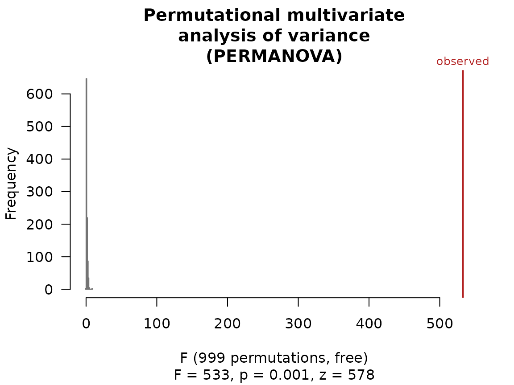
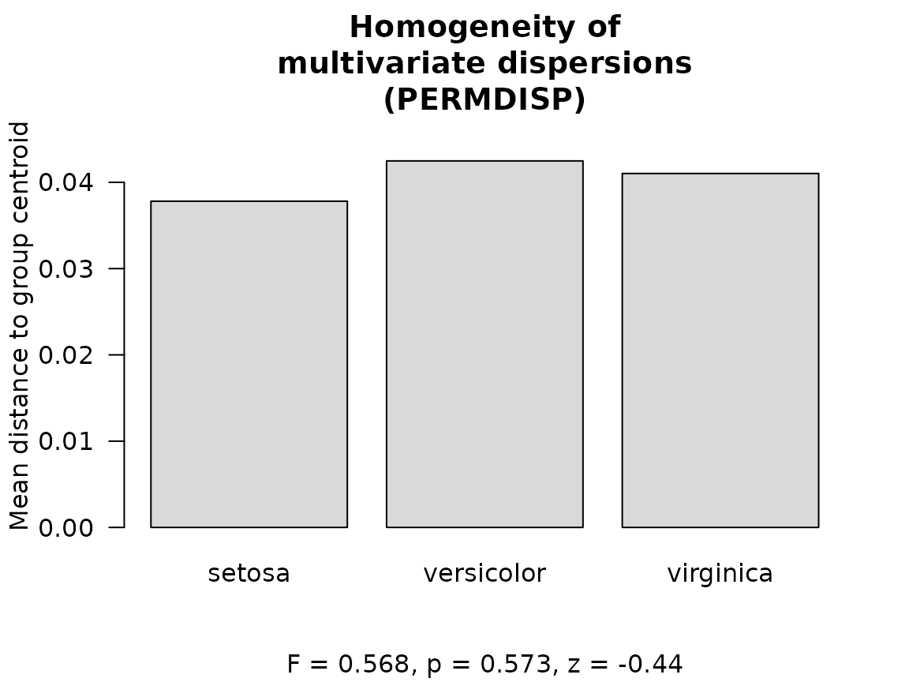
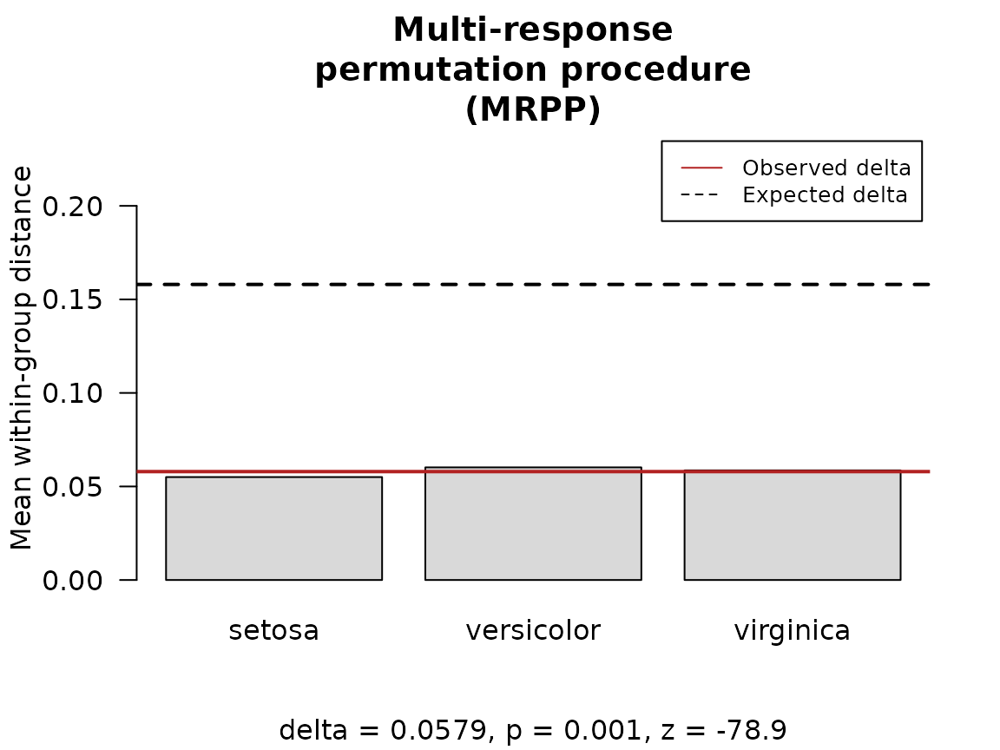
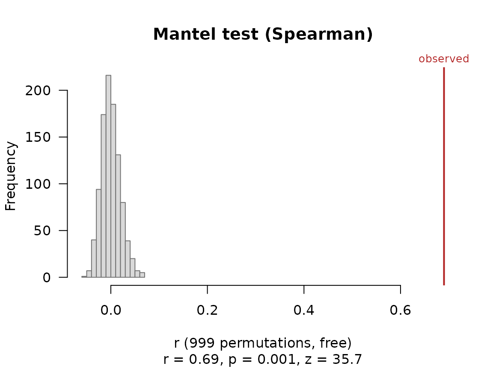

Introduction
An ordination plot can suggest that groups of samples differ. ecodive’s permutation tests check whether the difference is real: does a variable, such as treatment or body site, explain the distances between samples?
Each test takes a distance matrix (dm) from any beta
diversity metric, plus the variable to test: either a vector with one
value per sample, or the name of a column in a data frame of sample
metadata (data).
| Function | Test | Variable | Question |
|---|---|---|---|
permanova() |
Permutational Multivariate Analysis of Variance | either | Do group centroids differ? How much variance (R²) does it explain? |
permdisp() |
Homogeneity of Multivariate Dispersions | categorical | Do groups differ in their spread? |
anosim() |
Analysis of Similarities | categorical | Are distances within groups smaller than between them (ranks)? |
mrpp() |
Multi-Response Permutation Procedure | categorical | Are distances within groups smaller than expected? |
mantel() |
Mantel Test | numeric | Do distances correlate with differences in a numeric variable, or with another distance matrix? |
mantel_partial() |
Partial Mantel Test | numeric | Do they still, after removing the effect of a third distance matrix? |
They give the same statistics as vegan’s
adonis2(), betadisper(),
anosim(), mrpp(), mantel(), and
mantel.partial(), with permutations run in parallel C, and
the p-values are identical for any number of threads.
The examples use R’s built-in iris data, as in
vignette('ordination'): 150 flowers, four measurements
each, and three species.
PERMANOVA
permanova() is the most widely used test. Give the
grouping variable as a column name of data, or as a
vector.
res <- permanova(dm, 'Species', iris)
res
#> Permutational multivariate analysis of variance (PERMANOVA)
#>
#> F = 532.7, p = 0.001, z = 577.6
#> Permutations: 999 (free)
#>
#> Model R2 = 0.8788. Model tested as a whole:
#>
#> Df SumOfSqs R2 F Pr(>F)
#> Model 2 2.3173 0.8788 532.7 0.001 ***
#> Residual 147 0.3197 0.1212
#> Total 149 2.6370 1.0000
#> ---
#> Signif. codes: 0 '***' 0.001 '**' 0.01 '*' 0.05 '.' 0.1 ' ' 1Species explain most of the variation between flowers
(R2), and no permutation of the labels did as well
(p). The p-value cannot be smaller than 1 /
(permutations + 1), so use more permutations for a more
precise one.
plot() shows the pseudo-F of every permutation, and the observed one
far beyond them:
plot(res)
A formula tests several variables at once.
by = 'terms' tests each in turn, as adonis2()
does, and strata restricts permutations to within blocks
(such as subjects in a repeated-measures design).
permanova(dm, data = iris, formula = ~ Species + Sepal.Width, by = 'terms')
#> Permutational multivariate analysis of variance (PERMANOVA)
#>
#> F = 825, p = 0.001, z = 1105
#> Permutations: 999 (free)
#>
#> Model R2 = 0.9443. Terms added sequentially (first to last):
#>
#> Df SumOfSqs R2 F Pr(>F)
#> Species 2 2.3173 0.8788 1151.7 0.001 ***
#> Sepal.Width 1 0.1728 0.0655 171.8 0.001 ***
#> Residual 146 0.1469 0.0557
#> Total 149 2.6370 1.0000
#> ---
#> Signif. codes: 0 '***' 0.001 '**' 0.01 '*' 0.05 '.' 0.1 ' ' 1Checking the spread
PERMANOVA can also give a small p-value when groups have the same
center but different spreads. permdisp() tests the spread
on its own; a significant result means a PERMANOVA difference may come
partly or wholly from dispersion.
res <- permdisp(dm, 'Species', iris)
#> Warning: Some squared distances to group centres are negative, and were set to
#> 0.
res
#> Homogeneity of multivariate dispersions (PERMDISP)
#>
#> F = 0.5676, p = 0.573, z = -0.4401
#> Permutations: 999 (free)
#>
#> Distances to group centroids:
#> setosa versicolor virginica
#> 0.03781 0.04248 0.04103
#>
#> Df Sum Sq Mean Sq F N.Perm Pr(>F)
#> Groups 2 0.00057 0.0002852 0.568 999 0.573
#> Residuals 147 0.07386 0.0005024
plot(res)
Here the three species are equally spread, so the PERMANOVA result
above reflects a real difference in their centers. The warning comes
from Bray-Curtis distances not being Euclidean: a flower can then sit at
a negative squared distance from its species’ center, which
permdisp() sets to zero (Anderson 2006).
ANOSIM and MRPP
anosim() compares the ranks of distances within and
between groups. R near 1 means every group is distinct, and
near 0 means no difference. mrpp() compares the average
distance within groups with what random groups would give.
anosim(dm, 'Species', iris)
#> Analysis of similarities (ANOSIM)
#>
#> R = 0.8576, p = 0.001, z = 79.4
#> Permutations: 999 (free)
#>
#> Mean rank of the distances, between and within groups:
#> pairs mean_rank
#> Between 7500 7163.90
#> setosa 1225 2239.66
#> versicolor 1225 2457.85
#> virginica 1225 2418.15
res <- mrpp(dm, 'Species', iris)
res
#> Multi-response permutation procedure (MRPP)
#>
#> delta = 0.05795, p = 0.001, z = -78.9
#> Permutations: 999 (free)
#>
#> Mean within-group distances (weights: n):
#> setosa versicolor virginica
#> delta 0.05502 0.0602 0.05861
#> n 50 50 50
#>
#> Expected delta: 0.158
#> Chance-corrected within-group agreement A: 0.6332plot() of an MRPP result shows each group’s mean
within-group distance, with their weighted mean (the observed \delta) and the mean of all distances (the
\delta expected by chance);
type = 'null' shows the permutations instead, as for the
other tests.
plot(res)
Pairwise comparisons
When an overall test finds that the groups differ, the next question
is usually which ones. pairwise = TRUE reruns the test on
each pair of groups’ samples, and adjusts the pairs’ p-values for
multiple testing (Holm’s method by default; p_adjust = 'BH'
controls the false discovery rate instead). The overall result is
unchanged.
res <- permanova(dm, 'Species', iris, pairwise = TRUE)
res$pairwise
#> F R2 z n n_perm p_value
#> setosa-versicolor 552.51266 0.8493496 412.88785 100 999 0.001
#> setosa-virginica 1001.54509 0.9108722 688.94049 100 999 0.001
#> versicolor-virginica 91.82959 0.4837475 75.54295 100 999 0.001
#> p_adjusted
#> setosa-versicolor 0.003
#> setosa-virginica 0.003
#> versicolor-virginica 0.003p_value is each pair’s own permutation p-value, and
p_adjusted the value to report. anosim() and
mrpp() take the same arguments, and permdisp()
adds adjusted p-values to its pairwise t tests:
permdisp(dm, 'Species', iris, pairwise = TRUE)$pairwise
#> Warning: Some squared distances to group centres are negative, and were set to
#> 0.
#> t Df z n n_perm p_value p_value_perm
#> setosa-versicolor -1.0328277 98 -1.0325057 100 999 0.3042267 0.294
#> setosa-virginica -0.7327500 98 -0.7079531 100 999 0.4654599 0.471
#> versicolor-virginica 0.3204074 98 0.2900848 100 999 0.7493417 0.764
#> p_adjusted p_adjusted_perm
#> setosa-versicolor 0.9126800 0.882
#> setosa-virginica 0.9309198 0.942
#> versicolor-virginica 0.9309198 0.942Mantel test
mantel() correlates dm with a numeric
variable, or with a second distance matrix: here, whether flowers with
similar petals also have similar sepals. method can be
'pearson', 'spearman', or
'kendall'.
sepals <- bray(iris[, 1:2])
petals <- bray(iris[, 3:4])
res <- mantel(sepals, petals, method = 'spearman')
res
#> Mantel test (Spearman)
#>
#> r = 0.69, p = 0.001, z = 35.65
#> Permutations: 999 (free)
#>
#> Correlation: Spearman's rank correlation rho
#> Alternative: greater (r is more positive than by chance)
#> Samples: 150
plot(res)
mantel_partial() removes the effect of a third set of
distances, given: here, whether sepals and petals still
match after accounting for petal width alone.
mantel_partial(sepals, petals, given = 'Petal.Width', data = iris, method = 'spearman')
#> Partial Mantel test (Spearman)
#>
#> r = 0.3918, p = 0.001, z = 12.4
#> Permutations: 999 (free)
#>
#> Correlation: Spearman's rank correlation rho
#> Alternative: greater (r is more positive than by chance)
#> Samples: 150Running tests by name
dist_test() runs any test by name, as
dist_ord() does for ordinations. It checks that the
variable suits the test (categorical or numeric), and names are matched
forgivingly: 'adonis2' finds permanova and
'betadisper' finds permdisp.
dist_test(dm, 'adonis2', 'Species', iris)
#> Permutational multivariate analysis of variance (PERMANOVA)
#>
#> F = 532.7, p = 0.001, z = 577.6
#> Permutations: 999 (free)
#>
#> Model R2 = 0.8788. Model tested as a whole:
#>
#> Df SumOfSqs R2 F Pr(>F)
#> Model 2 2.3173 0.8788 532.7 0.001 ***
#> Residual 147 0.3197 0.1212
#> Total 149 2.6370 1.0000
#> ---
#> Signif. codes: 0 '***' 0.001 '**' 0.01 '*' 0.05 '.' 0.1 ' ' 1Each result converts to a one-row data frame with the same columns, so several tests combine into one table.
tests <- list_dist_tests(val = 'id', groups = 'categorical')
do.call(rbind, lapply(tests, function (test)
as.data.frame(dist_test(dm, test, 'Species', iris)) ))
#> Warning: Some squared distances to group centres are negative, and were set to
#> 0.
#> test stat_name statistic p_value z n_perm
#> 1 anosim R 0.85763011 0.001 79.3963367 999
#> 2 mrpp delta 0.05794548 0.001 -78.9020283 999
#> 3 permanova F 532.74262193 0.001 577.5590509 999
#> 4 permdisp F 0.56763808 0.573 -0.4401028 999Reproducibility
Permutations come from ecodive’s own random number generator, set by
seed (default 0), so the same call always
gives the same p-value, on any computer and with any number of
cpus. R’s set.seed() has no effect.